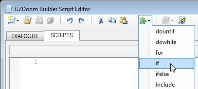
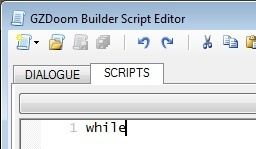
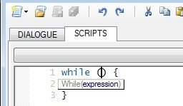

在脚本编辑器中，你可以使用和创建代码片段（Code Snippets），它们是可重复使用的小段代码块，可以插入到代码中你需要的位置。
使用代码片段：
要使用某个片段，请从下拉菜单中选择它。
或者，输入片段的名称（或将光标置于已有片段的末尾），然后按 Tab 键将其展开。
示例：要创建 while 循环，请输入“while”，然后按 Tab 键：


创建新的代码片段：
代码片段是存放在 [GZDB]\Snippets\[category] 中的纯文本文件，所以你只需在那里新建一个文本文件，并向其中添加所需的代码即可。
你可以使用以下几种特殊标记：
为自定义脚本配置创建新的代码片段：
要向一个尚没有任何现有片段的脚本配置（脚本编辑器中的“插入代码片段”下拉列表处于禁用状态）添加片段，你需要：